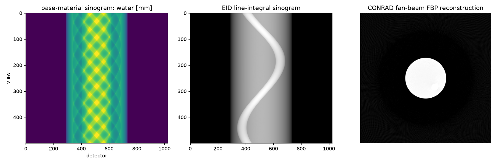
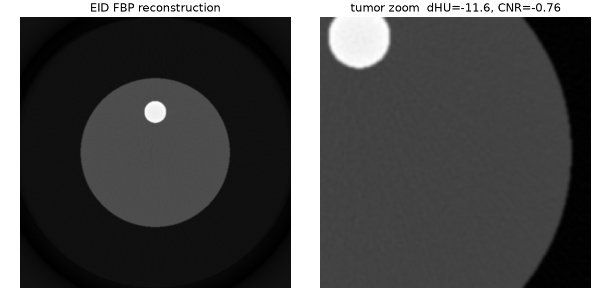

01Overview
We image an iron-loaded tumor inside a rabbit-scale phantom and ask at
what iron dose the nanoparticles become detectable, and how detector type and
beam-hardening correction shift that limit. This page updates as the pipeline runs —
every figure below is regenerated from results/ by
src/build_dashboard.py.
| Factor | Levels |
|---|---|
| Formulation conc. (delivered mass model) | 0, 0.5, 1, 2, 5, 10, 20 mg SPION/ml |
| Detector | Energy-integrating (EID), Photon-counting multi-bin (PCD) |
| Beam-hardening correction | off, on |
| Noise realizations @ 70 000 ph/px | 10 |
| Geometry | C-arm cone-beam, 500 projections, 20 cm FOV |
02X-ray spectrum
CONRAD standard polychromatic spectrum used for the forward model, plus the energy-bin thresholds used by the photon-counting detector.


03Materials & attenuation
Iron is loaded into a soft-tissue matrix (not water) so a zero-iron tumor matches background. These plots verify the attenuation model before imaging.


04Digital phantom
Rabbit-scale ICRU soft-tissue cylinder with a cortical-bone insert (beam-hardening source) and an 8 cm³ iron-loaded tumor.


05Projections
Polychromatic forward projections (500 views). One example projection and a sinogram per detector.


06Reconstructions
FDK cone-beam reconstructions across the factor grid. The gallery below is assembled automatically; rows = iron dose, columns = detector × beam-hardening.


07Detectability
Contrast (ΔHU) and contrast-to-noise ratio vs. iron dose, with the Rose detection threshold. The table lists the lowest detectable dose per condition.


| Condition | Detection threshold (mg Fe/ml) | ΔHU @ 6 mg | CNR @ 6 mg |
|---|---|---|---|
| EID, BH off | — | — | — |
| EID, BH on | — | — | — |
| PCD, BH off | — | — | — |
| PCD, BH on | — | — | — |
08Code audit
Annotated snippets of the key pipeline steps so a reviewer can audit the methodology without reading the whole codebase. illustrative — replaced by permalinked source after implementation (M0–M7)
Dose model — delivered mass → tumor iron concentration
The independent variable is the formulation concentration; a fixed particle mass is spread through the 8 cm³ tumor and converted to iron via the magnetite Fe fraction.
# c_form [mg SPION/ml] -> tumor iron concentration [mg Fe/ml]
FE_FRACTION = 0.724 # magnetite Fe3O4
DELIVERED_AT_10 = 6.0 # mg SPION delivered at c_form = 10 mg/ml
TUMOR_VOL = 8.0 # cm^3
def tumor_iron_conc(c_form):
m_spion = DELIVERED_AT_10 * (c_form / 10.0) # delivered particle mass [mg]
c_spion = m_spion / TUMOR_VOL # tumor particle conc [mg/ml]
return FE_FRACTION * c_spion # = 0.0543 * c_form [mg Fe/ml]
Custom materials — iron-loaded soft tissue
Iron is added to the same soft-tissue matrix as the background so that c=0 ≡ background.
# CONRAD custom material via pyconrad (JVM bridge) — API verified at M0
material = mixture_of("soft_tissue", add_iron_mg_per_ml=c_fe)
material.setDensity(RHO_SOFT_TISSUE + 1e-3 * c_fe) # negligible mass, high-Z contrast
MaterialsDB.put(material)
Polychromatic forward projection — 500 views, EID vs PCD
Line integrals are evaluated through the standard spectrum; the detector model sets whether photons are energy-weighted (EID) or counted per energy bin (PCD).
spectrum = PolychromaticXRaySpectrum(...) # CONRAD standard spectrum
model = PolychromaticAbsorptionModel(); model.setInputSpectrum(spectrum)
proj = forward_project(phantom, geometry_500_views, model, detector=det)
proj = apply_poisson_noise(proj, I0=70_000) # per-pixel photon count
Reconstruction & analysis — FDK, ΔHU, CNR
Beam-hardening correction is toggled here; metrics come from tumor vs. reference ROIs.
vol = fdk_reconstruct(proj, geometry_500_views, bh_correction=on_off)
d_hu = mean(vol[tumor_roi]) - mean(vol[ref_roi])
cnr = d_hu / std(vol[ref_roi]) # Rose: detectable if cnr >= 3..5
09Reproducibility
Every artifact on this page is regenerable from source.
- Environment: Java 8 + a pyconrad-compatible Python (3.9/3.10 venv).
- Run the study:
python run_experiment.py→ writesresults/. - Rebuild this dashboard:
python src/build_dashboard.py→ writesdocs/. - Full parameters and rationale: SPEC.md.